Dibujar un track#
Esta página muestra cómo dibujar un track propio con el enrutador de
Configurar el enrutamiento. Las imágenes usan además el mapa de
Activar mapas, el DEM de Datos de altitud y sombreado y Example.gpx de
Cargar un archivo GPX.
Imágenes: © OpenStreetMap contributors; Datenquelle: Land Tirol - data.tirol.gv.at, CC BY 4.0;
Example.gpx: fuzzybear, CC BY-SA 4.0.
Empezar un track#
Mientras dibujas, una barra en la parte superior del mapa contiene las herramientas de dibujo. Guardar como nuevo guarda el track (consulta Guardar el track); Cancelar lo descarta.
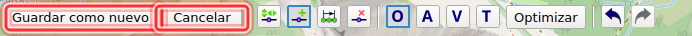
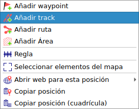
Haz clic con el botón derecho en el mapa donde debe empezar el track y haz clic en Añadir track. Si mantienes pulsado un momento el botón izquierdo del ratón sobre el mapa, se abre el mismo menú.
Mueve el ratón hasta donde sigue el track y haz clic. Cada clic añade un punto, y una línea recta lo une con el punto anterior. Para dibujar líneas rectas, O tiene que estar activa en la barra. Si hay otra letra activa, haz clic primero en O.
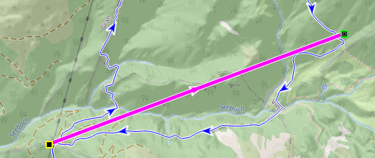
Cuando el track esté terminado, haz clic con el botón derecho para dejar de añadir puntos. Para seguir dibujando, mueve el ratón justo más allá del primer o del último punto hasta que un cuadrado rojo lo marque, y haz clic.
Dibujar siguiendo caminos#
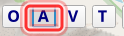
Mientras añades puntos, haz clic en A en la barra o pulsa la tecla A.
Mueve el ratón hasta el siguiente punto y mantenlo quieto un momento. El enrutador busca el recorrido por caminos y carreteras, y la línea lo sigue. Calcula la ruta con el perfil seleccionado en el panel Enrutamiento. Haz clic para añadir ese tramo al track.
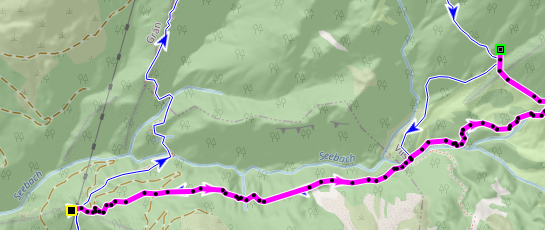
A necesita un enrutador que calcule al vuelo; consulta Qué hace un enrutador. Sin él, su botón aparece en gris. La letra que está activa al guardar o cancelar el track vuelve a estar activa cuando empiezas el siguiente.
Dibujar siguiendo un track#
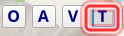
Haz clic con el botón derecho en un track cargado donde debe empezar tu track, por ejemplo el de
Example.gpx, y haz clic en Añadir track. Después haz clic en T en la barra o pulsa la tecla T.Mueve el ratón a lo largo de ese track hasta el siguiente punto. QMapShack muestra ese track en amarillo, y tu línea lo sigue. Solo funciona si tu último punto y el puntero del ratón están los dos sobre ese track. Haz clic para añadir ese tramo al track.
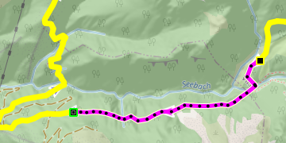
Líneas rectas y mapas vectoriales#
Haz clic en O o pulsa la tecla O para volver a dibujar líneas rectas. V, o la tecla V, sigue las líneas de un mapa vectorial, como un mapa de Garmin. Rara vez lo necesitas: el mapa y los datos de enrutamiento suelen venir ambos de OpenStreetMap, así que A ya sigue los mismos caminos.
Corregir el track#
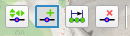
Usa los cuatro botones a la derecha de Cancelar para cambiar los puntos de la línea. De izquierda a derecha, mueven puntos, añaden puntos, seleccionan un intervalo de puntos y borran puntos.
Para mover un punto, haz clic en el primer botón o pulsa Ctrl+M. Haz clic en el punto, mueve el ratón y vuelve a hacer clic para soltarlo.
Para añadir un punto, haz clic en el segundo botón o pulsa Ctrl++. Haz clic en la línea entre dos puntos: el punto nuevo se queda pegado al ratón. Vuelve a hacer clic para soltarlo. Para añadir puntos al principio o al final, mueve el ratón justo más allá del primer o del último punto. Cuando un cuadrado rojo marque ese punto, haz clic. Cada clic añade allí un punto; haz clic con el botón derecho para terminar.
Para seleccionar un intervalo, haz clic en el tercer botón o pulsa Ctrl+R. Después haz clic en el primer y en el último punto del intervalo. Aparecen dos botones: uno borra los puntos intermedios y el otro vuelve a unir los dos puntos. La letra activa en la barra decide cómo.
Para borrar un punto, haz clic en el cuarto botón o pulsa Ctrl+- y después haz clic en el punto.
Cuando mueves, añades o borras un punto, QMapShack vuelve a unir los puntos vecinos. La letra activa en la barra decide cómo. Para cancelar mientras mueves o añades un punto, haz clic con el botón derecho o pulsa Esc.
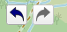
Los botones de flecha del extremo derecho de la barra deshacen y rehacen el último cambio.
Guardar el track#
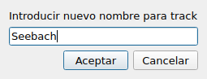
Haz clic en Guardar como nuevo en la barra. Escribe un nombre para el track y haz clic en Aceptar.
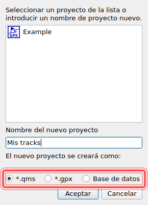
Selecciona el proyecto al que va el track, o escribe un nombre para un proyecto nuevo en Nombre del nuevo proyecto.
Para un proyecto nuevo, después de escribir el nombre, elige en El nuevo proyecto se creará como cómo lo guarda QMapShack. *.qms es el formato de archivo propio de QMapShack, y *.gpx un archivo GPX que también leen otros programas y dispositivos. QMapShack preselecciona uno, así que comprueba que sea el que quieres. La tercera opción, Base de datos, se explica en Bases de datos.
Haz clic en Aceptar.
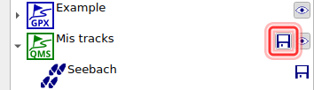
El panel Espacio de trabajo muestra ahora el track bajo su proyecto.
El botón de guardar en la fila del proyecto está marcado en la imagen. Indica que el proyecto tiene cambios que no se han guardado en un archivo. Haz clic en él para guardar el proyecto.
La primera vez que guardas el proyecto, QMapShack te pregunta dónde guardarlo. El diálogo propone el nombre del proyecto
como nombre de archivo. Se abre en la carpeta desde la que cargaste o en la que guardaste por última vez. Si has
configurado la carpeta principal, QMapShack abre el diálogo
en su carpeta GPX.
En la fila del track, el mismo símbolo no es un botón, sino un indicador de cambios. Muestra que el track ha cambiado desde la última vez que se guardó el proyecto.
Altitudes del DEM#
Mientras dibujas, el recuadro Datos Track de la esquina superior izquierda del mapa muestra la longitud del track y cuánto sube y baja. Las altitudes vienen del DEM; consulta Datos de altitud y sombreado. Por eso, activa el DEM antes de dibujar y dibuja donde tenga datos.
Al guardar el track, QMapShack asigna a sus puntos la altitud del DEM. Donde el DEM no tiene datos, el punto se queda sin altitud. Entonces Datos Track muestra ¡Datos de altitud no válidos! en lugar del ascenso y el descenso.
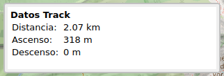